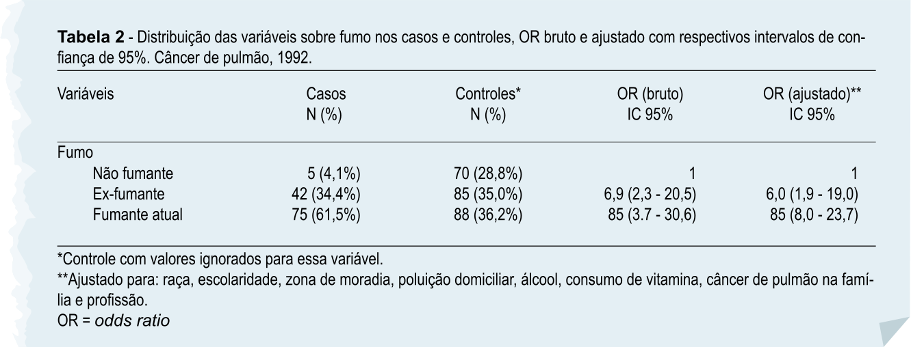

Na epidemiologia, análises de associação são frequentemente apresentadas de forma bruta e ajustada. Em outras palavras, estamos olhando o efeito total e o efeito exclusivo da nossa variável de exposição, se restar, após o ajuste.
Na figura, podemos observar que o efeito de ser fumante para desenvolver câncer de pulmão é aproximadamente 10 vezes maior se comparado com quem não fuma. Quando ajustamos esse efeito para diversos fatores, como álcool, escolaridade e histórico familiar, ele diminui para oito vezes.
